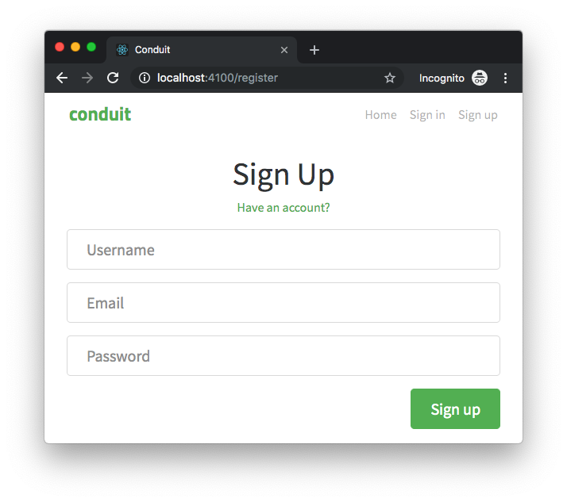
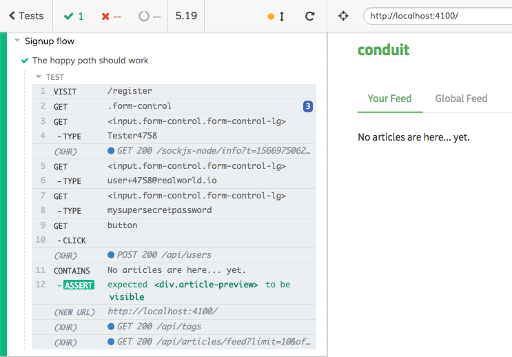

Interacting with the page
First of all: we need to automate the Cypress test to fill the form and click the "Sign up" button for us. How could we accomplish that?

Well, we need to:
"identify" (from a technical point of view) the input fields
identify the button
click the button
Identifying elements and interacting with a web page have some hidden challenges that are all but easy to be faced. We are going to discover why looking at the markup of the signup form (here the local one and the online hosted one):
<form>
<fieldset>
<fieldset class="form-group">
<input class="form-control form-control-lg" type="text" placeholder="Username" value="" />
</fieldset>
<fieldset class="form-group">
<input class="form-control form-control-lg" type="email" placeholder="Email" value="" />
</fieldset>
<fieldset class="form-group">
<input class="form-control form-control-lg" type="password" placeholder="Password" value="" />
</fieldset>
<button class="btn btn-lg btn-primary pull-xs-right" type="submit">Sign up</button>
</fieldset>
</form>
The three input fields are pretty identical except for:
the order: we know that the email field comes first, then the email and password fields
the type: text, email and password
the placeholder
other ideas?...
Order of elements
Please note: the following is not the best E2E test on earth, you are going to discover why step by step 😉
The Cypress test could be the following
context("Signup flow", () => {
it("The happy path should work", () => {
cy.visit("/register");
cy.get(".form-control").then($els => {
cy.get($els[0]).type("Tester");
cy.get($els[1]).type("user@realworld.io");
cy.get($els[2]).type("mysupersecretpassword");
});
cy.get("button").click();
cy.contains("No articles are here").should("be.visible");
});
});
cy.get is the Cypress command you leverage to consume a DOM element in the test. Please note that, as the documentation says:
The querying behavior of this command matches exactly how $(…) works in jQuery.
It sounds strange to leverage JQuery nowadays... But do not forget one of the testing rules: the test must be simple. The less code the test is made of, the more the test is readable and understandable. And JQuery surely improves both the simplicity and productivity.
What about the following snippet
cy.get(".form-control").then($els => {
cy.get($els[0]).type("Tester");
cy.get($els[1]).type("user@realworld.io");
cy.get($els[2]).type("mysupersecretpassword");
});
cy.get(".form-control").then($els => ...is necessary because almost every Cypress command can be leveraged synchronously (we are going to learn why later)$els, like every JQuery selector, is an array containing all the DOM elements that respond to the given selector (.form-control)cy.get($els[<INDEX>])select the element and.type("Tester")types, as the user would do, into the input field
Then, we can go ahead and click the buttons
it("The happy path should work", () => {
cy.visit("/register");
cy.get(".form-control").then($els => {
cy.get($els[0]).type("Tester");
cy.get($els[1]).type("user@realworld.io");
cy.get($els[2]).type("mysupersecretpassword");
cy.get("button").click();
cy.contains("No articles are here").should("be.visible");
});
});
cy.get("button").click()speaks for itself"No articles are here... yet." is the string that the home pages shows when the signup flow ends. After successful registration, the user is redirected to the home page, the "Your Feed" does not contain any posts yet. Think about it as the proof that everything worked (while testing the signup flow, obviously)

the
cy.contains()API gets the DOM element containing the textcy.contains("No articles are here")gets the DOM element containing the text "No articles are here"cy.contains("No articles are here").should("be.visible");asserts about the element itself. This is the end of our test, we want to be sure that the text is visible because it means that the test is finished, the signup flow has worked! (if you want to know more about the available assertions, take a look at the official documentation)
As you can see from the screenshot above, the test worked! 🎉
Now: are we sure that the test follows the testing rules? This test is neither deterministic nor stable nor useful if it fails! The next chapters are going to explain the reasons why.